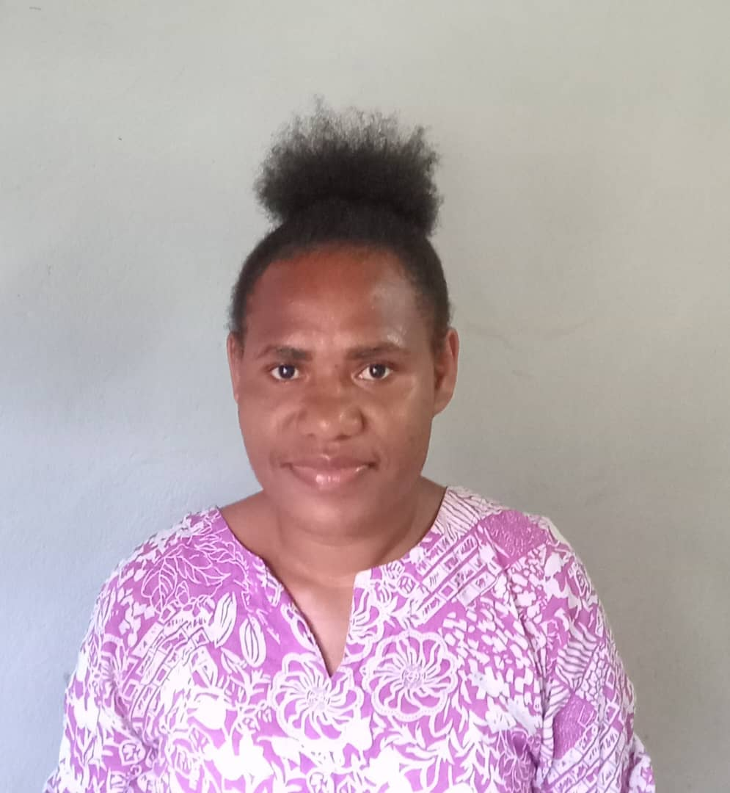

This website was created by Jonila James as part of her Semester 1 Web Design project at DATEC Learning Center in Port Moresby. The project demonstrates her skills in HTML, CSS, and JavaScript, and her passion for making Tok Pisin accessible and fun to learn.
The goal of this project is to help learners practice Tok Pisin through audio pronunciation, interactive translation, and background information. By combining technology and language learning, Jonila hopes to make communication easier across Papua New Guinea’s diverse communities.